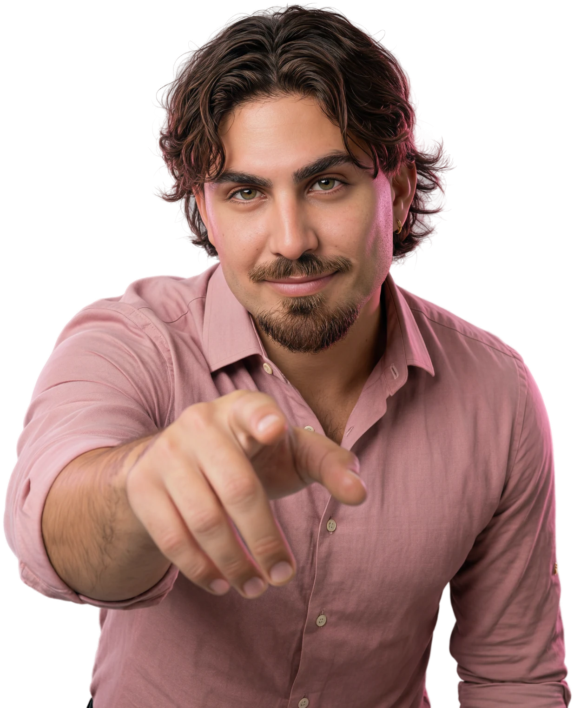
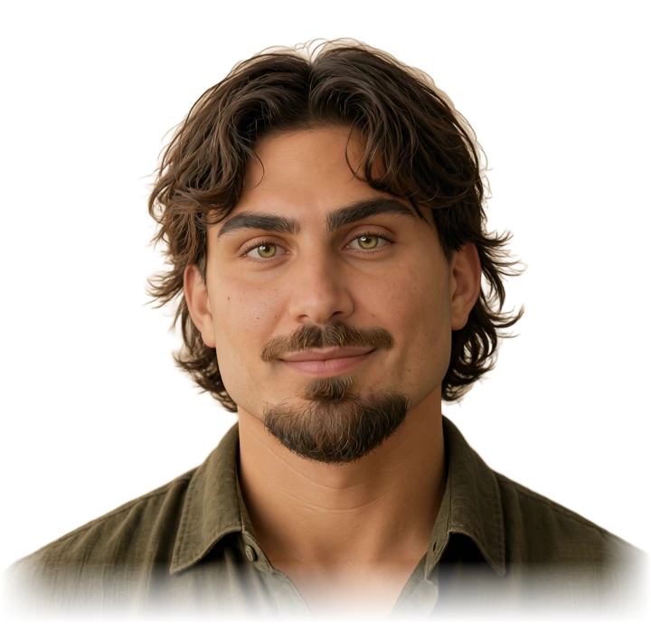

Your idea.
I’ll build it.
בונה אתרים, אפליקציות ומערכות לעסקים, מהרעיון הראשון ועד מוצר שעובד.

לחצו על עבודה כדי לפתוח אותה.
האתר מוצג לרוחב המסך.
בונה אתרים, אפליקציות ומערכות לעסקים, מהרעיון הראשון ועד מוצר שעובד.

לחצו על עבודה כדי לפתוח אותה.
עיצוב ופיתוח במקום אחד: אתרים, חנויות, אפליקציות ומערכות לעסקים.
עיצוב שנראה טוב ונוח לשימוש, בעברית ובכל מסך.
עיצוב שמותאם לעסק, מהמסך הראשון ועד כפתור הפנייה.
מסכים, זרימות וחוויית שימוש לאפליקציות מובייל.
רענון לאתר, לחנות או לאפליקציה שכבר עובדים, בלי להתחיל מאפס.
ממשק מימין לשמאל שנוח לשימוש גם בטלפון.
פיתוח מקצה לקצה, מהרעיון הראשון ועד מוצר שעובד.
אתרי תדמית, קטלוגים ופורטפוליו, עם חיפוש, סינון וגלריות.
חנות אונליין עם חוויית קנייה נוחה במובייל.
אפליקציות לעסקים, למשל לקביעת תורים ולרשימות המתנה.
תהליכי עבודה כמו חשבוניות, תשלומים ועדכונים ללקוחות.
עוזר דיגיטלי שעונה למבקרים, כמו זה שבאתר הזה.
יש לכם רעיון? ספרו לי עליו.

היי, אני העוזר הדיגיטלי של תומר. אפשר לשאול אותי על העבודות שלו או לספר לי מה תרצו לבנות.